03 — Projects
Featured Projects
Enterprise XR applications from my internship at Lufthansa Technik, plus autonomous robotics work.
Standalone XR Full-Body
Motion Capture System
Built a full-body motion capture system running entirely on Android standalone XR — no PC, no external processing. The system tracks, solves, and records motion in real time using a custom IK pipeline built on OpenXR pose data, with runtime T-pose calibration and JSON-based animation serialization for reusable playback inside Unity.
- Designed modular architecture separating tracking input, IK solving, and recording into independent pipelines for maintainability and extensibility
- Built full-body IK system covering arms, legs, and hips using Unity Animator IK with constraint-based stabilization and tracker-to-avatar retargeting
- Developed runtime T-pose calibration for position and rotation alignment across all tracked joints at session start
- Engineered hierarchical transform recording per frame, serialized to JSON and reconstructable as Unity AnimationClips for reuse
- Integrated VIVE OpenXR passthrough for mixed-reality recording, optimized for real-time performance on standalone Android XR with no external compute
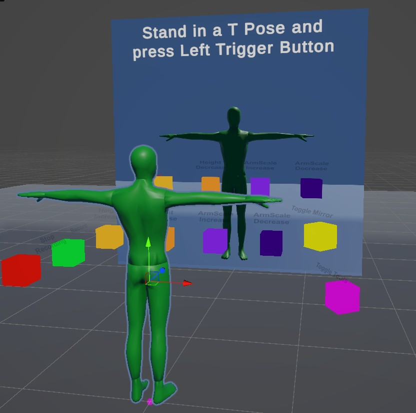
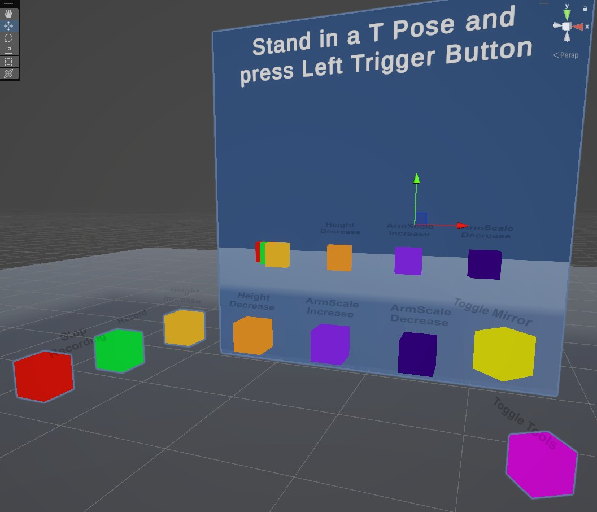
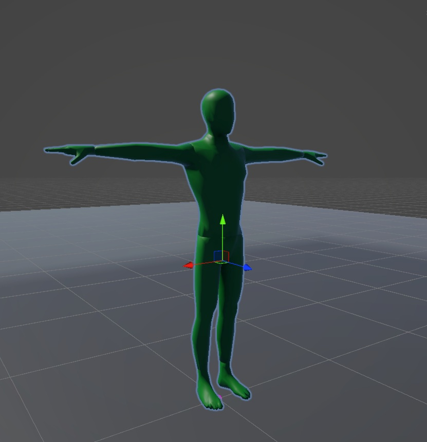
Cinematic XR
Space-to-Earth Experience
An immersive cinematic intro sequence built in XR — simulating a flight from outer space toward Earth along a Cinemachine Dolly Spline, with the XR rig synchronized to the camera path for full spatial presence. The experience transitions through orbital movement, a metallic logo reveal, and a 3D globe with modular location pins, designed as a flagship brand experience for Lufthansa Technik.
- Developed a dynamic 3D Earth visualization with interactive geographic pin placement, supporting modular location markers with runtime position correction
- Implemented a cinematic flight system using Cinemachine Dolly Spline with the XR rig synchronized to the camera path, giving users full spatial presence throughout the sequence
- Built a modular title and logo reveal system featuring curved orbital text animation and a controlled lighting-based metallic reveal effect
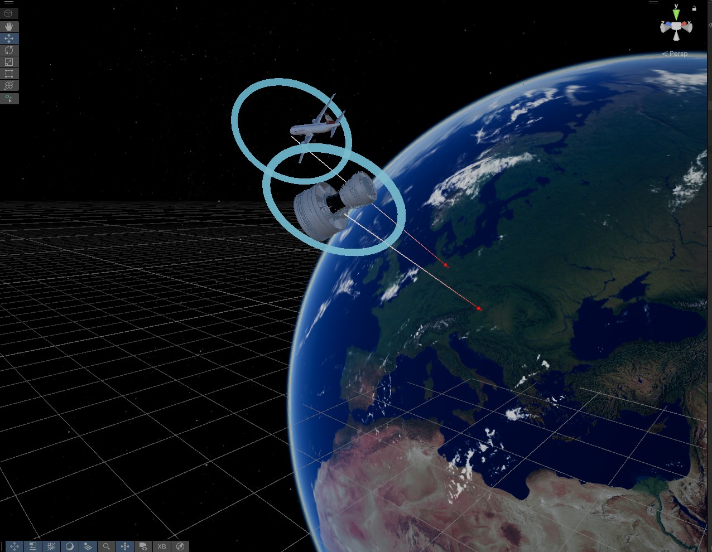
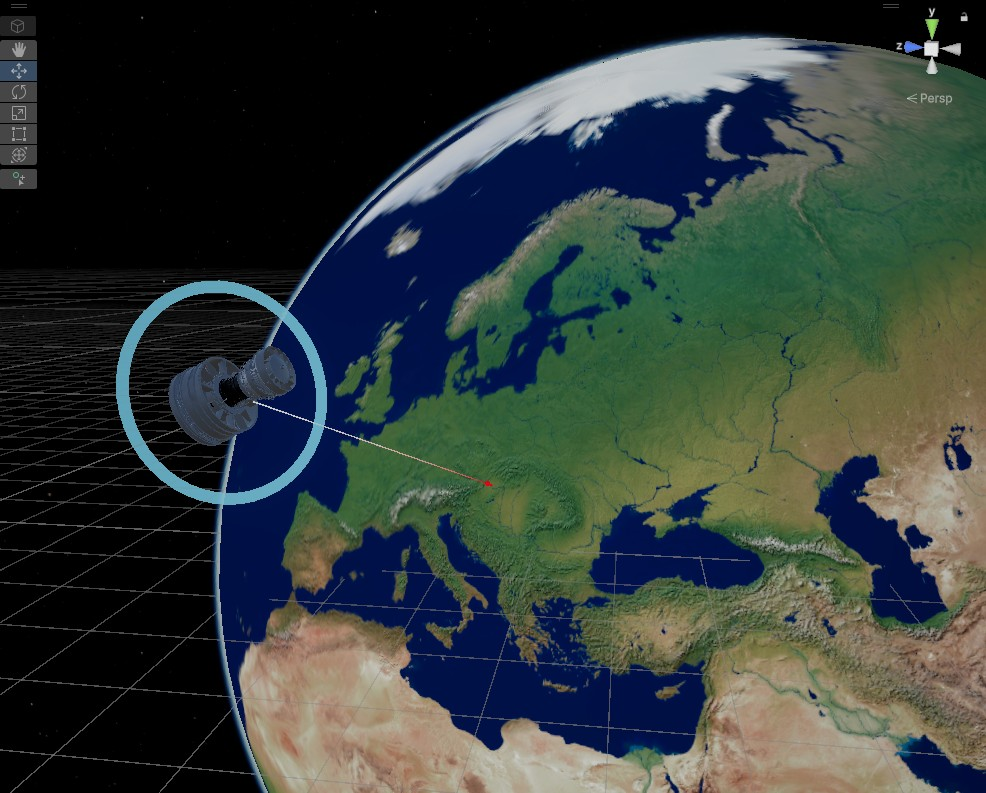
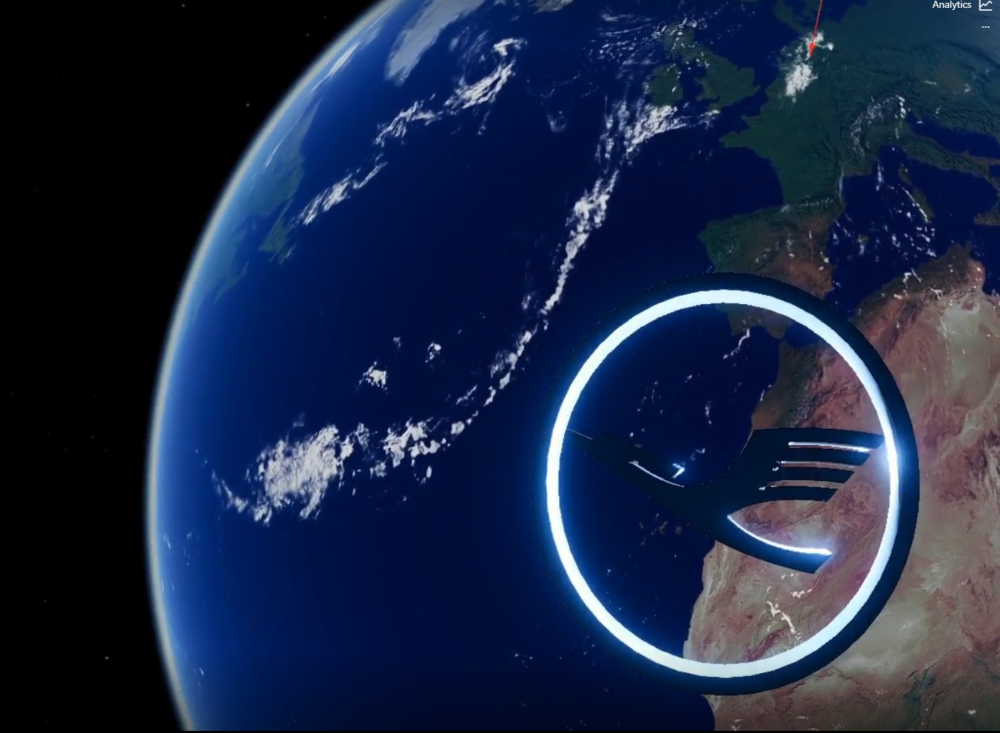
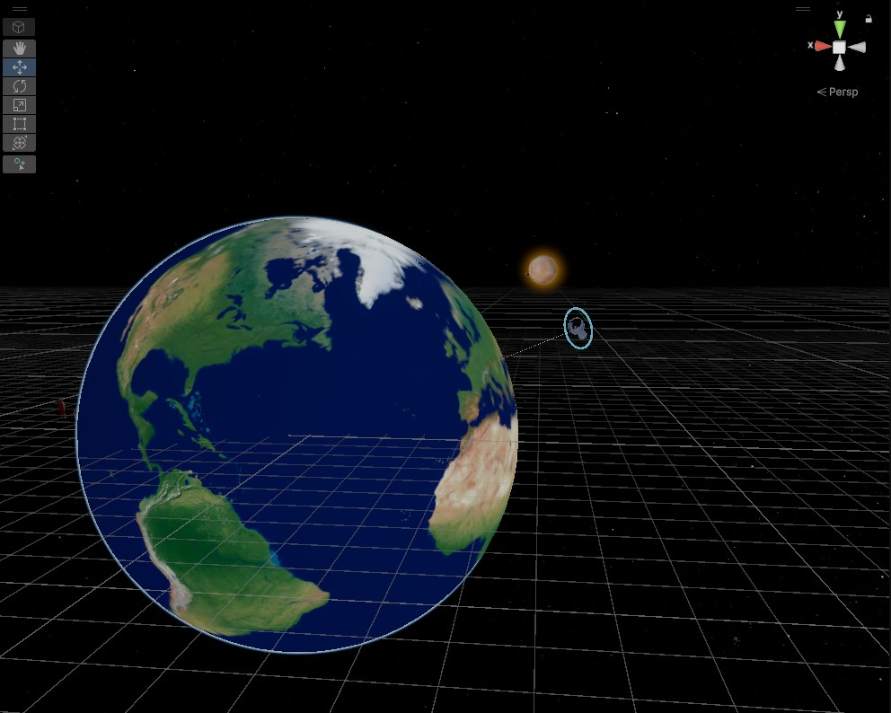
Autonomous Warehouse Robot
with SLAM Navigation
A 4-wheeled autonomous mobile robot designed for warehouse navigation and tray manipulation, simulated end-to-end in ROS and Gazebo. The robot localizes on a pre-built map, plans collision-free paths, and actuates a prismatic tray joint — all without human input.
- Modelled complete robot in URDF with 4 continuous wheel joints, prismatic tray joint, Hokuyo LiDAR, and RGB camera with full inertial and collision properties
- Implemented AMCL localization fusing LiDAR scan data against a pre-built map for real-time pose estimation inside a warehouse environment
- Configured move_base stack with DWA planner and custom global/local costmaps for autonomous point-to-point navigation with obstacle avoidance
- Built tray actuation via Gazebo SetModelConfiguration service using 100-step interpolation for smooth prismatic joint movement to any target height
- Integrated omni-directional drive plugin with odometry feedback, enabling precise velocity-commanded motion published over cmd_vel
Modular VR Training
& Assessment Platform
A data-driven VR training framework where all content is loaded from ScriptableObjects and all UI is generated at runtime — no hardcoded screens. Designed as a plug-and-play VR Builder behavior, it slots into any industrial training scenario as a self-contained learning module.
- MCQ engine built on ScriptableObjects with per-session answer shuffling and two modes — Beginner with live feedback and Advanced with post-session analytics only
- Full session analytics tracking correctness, error rate, and retry count, displayed as a structured performance table inside VR at session end
- Packaged as a custom VR Builder Behavior so the entire quiz system can be dropped into any scenario pipeline without modification
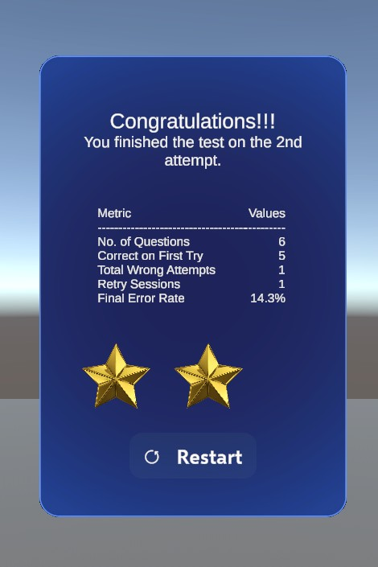
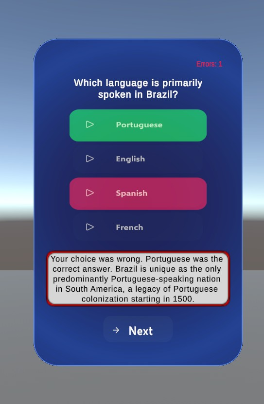

Custom VR Builder
Condition Extensions
Two custom conditions built as native extensions to the VR Builder framework, expanding its out-of-the-box capabilities for enterprise training scenarios at Lufthansa Technik.
- Visibility & Gaze Condition — detects whether a target object is within the camera frustum or directly gazed at for a configurable duration, with support for distance limits, gaze angle threshold, and accumulative timing
- Visual Inspection Condition — requires the user to look at a target from within a defined distance and angle for a set time, with a circular progress indicator, optional object highlight, and a scene-view editor preview for designer-friendly placement
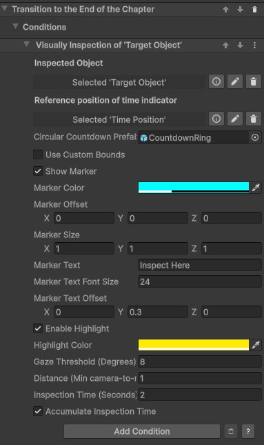
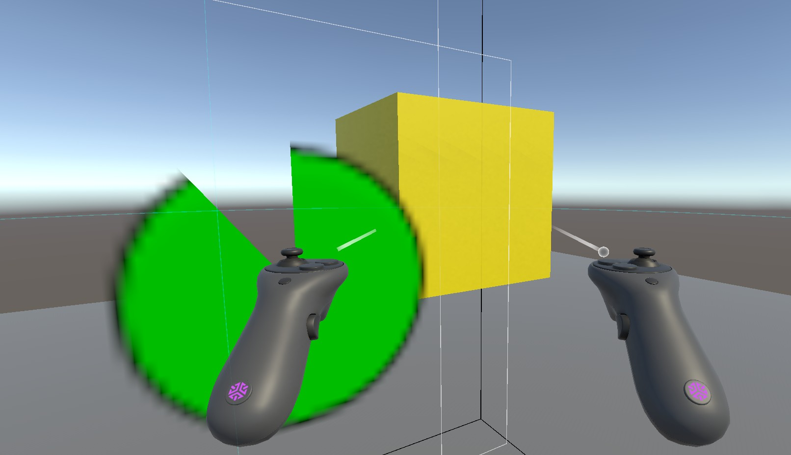
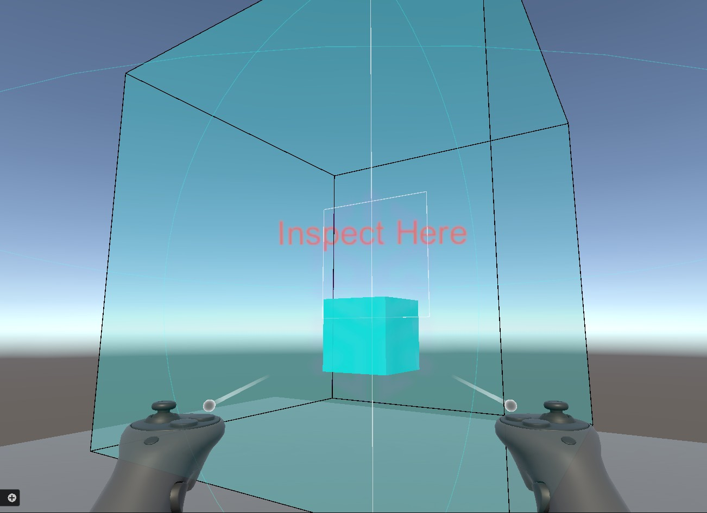
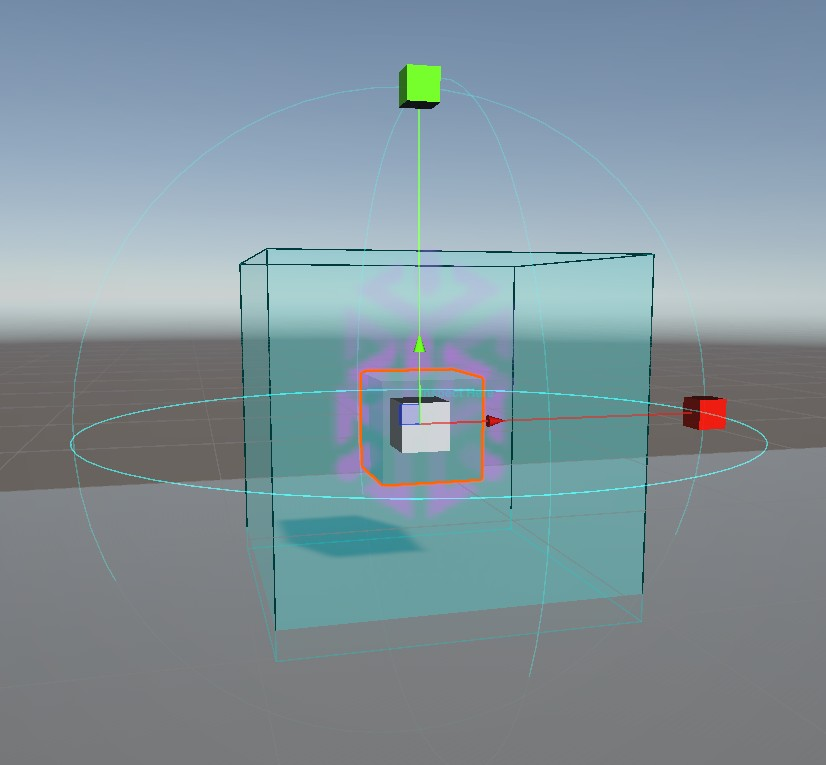
AR Training Interface
for Cabin Crew
AR-based training interface for Lufthansa Technik cabin crew with QR-based world locking for precise spatial anchoring. USS/UXML-driven interactive UI, 3D model visualization, and guided navigation workflows with real-world AR overlay integration and scalable content delivery for aviation training.